שלושה מסכים מלווים כל יום עבודה: השעון שבו מחתימים כניסה ויציאה, הלו״ז
שאומר מתי ואיפה עובדים, והדוח שמסכם את החודש. המדריך עובר עליהם אחד־אחד,
ועל שני הנתיבים שצריך כשהשעון לא עבד.
📱
כל הצילומים כאן צולמו מהמערכת עצמה בטלפון. הנתונים בהם הם נתוני
הדגמה — עובד בשם "ישראל ישראלי", לקוחות ואירועים בדויים. במערכת שלכם
יופיעו השמות, המחסנים והשעות האמיתיים.
איפה מוצאים כל מסך
בתחתית המסך בטלפון יש חמישה כפתורים. הרביעי מימין הוא השעון, והחמישי —
"עוד" — פותח את התפריט המלא, שבו הכול מרוכז תחת הכותרת "הנוכחות שלי".
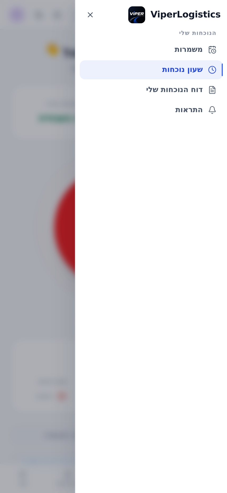
התפריט המלא, נפתח מ״עוד״
ארבעת המסכים שלכם
המסך
מה הוא עושה
כתובת
שעון נוכחות
החתמת כניסה ויציאה, ודיווחים על היום
/my/attendance
משמרות
הלו״ז השבועי — המשמרות המשובצות לכם
/my/schedule
דוח הנוכחות שלי
שעות, שעות נוספות ושכר, לפי חודש
/attendance
התראות
אילו הודעות תקבלו ובאיזה אופן
/my/notifications
המערכת עובדת בדפדפן וגם כאפליקציה מותקנת. אם התקנתם אותה למסך הבית,
היא נפתחת כאפליקציה רגילה — ושני המסכים הראשונים נטענים גם בלי קליטה,
מהעותק השמור במכשיר.
1
שעון נוכחות
מסך אחד לכל יום העבודה: כפתור אחד גדול שמתחלף בין כניסה ליציאה, ומתחתיו
מה שהמערכת מצפה לו — שעות המשמרת, נקודת ההתחלה ודרישת המיקום.
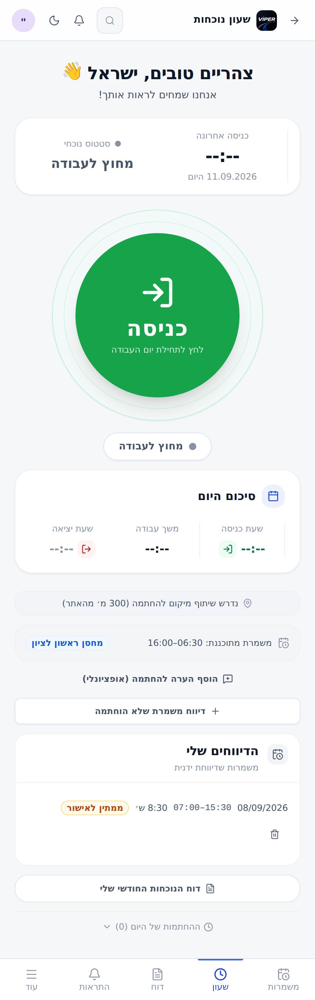
לפני החתמת כניסה
לפני שלוחצים
משמרת מתוכננת — השעות שהמערכת מצפה להן, ולידן נקודת ההתחלה: שם המחסן אם יוצאים מהמחסן, או "שטח" אם מגיעים ישר לאתר.
נדרש שיתוף מיקום להחתמה — כשהשורה הזו מופיעה, ההחתמה תיכנס רק מתוך הרדיוס שמצוין בה. צריך לאשר לדפדפן גישה למיקום.
הוסף הערה להחתמה — שדה חופשי ואופציונלי, נשמר על ההחתמה עצמה.
אם לאתר או למחסן לא הוגדרו קואורדינטות, אין מול מה לאמת — ואז המסך
אומר זאת במפורש, ואפשר להחתים מכל מקום לפי שעות המשמרת.
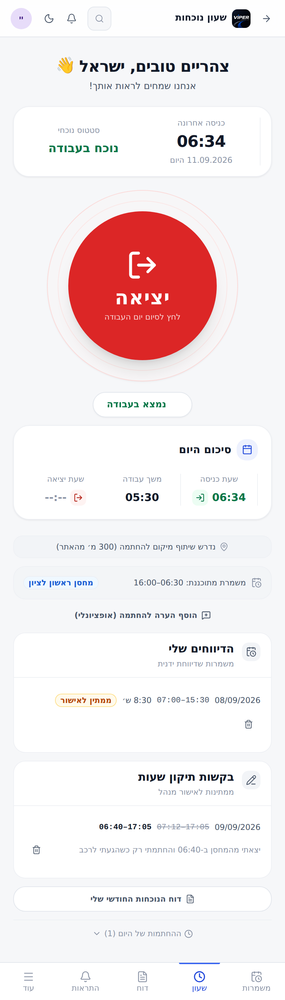
במשמרת פתוחה
במהלך המשמרת
אחרי הכניסה הכפתור מתחלף לאדום, הסטטוס הופך ל״נוכח בעבודה״,
ו״משך עבודה״ מתחיל לרוץ בזמן אמת.
כרטיס סיכום היום
שעת כניסה
ההחתמה הראשונה של היום
משך עבודה
מונה חי כל עוד המשמרת פתוחה; אחרי היציאה — סך השעות שנסגרו היום
שעת יציאה
היציאה האחרונה שנסגרה היום. --:-- אומר שעדיין לא יצאתם
מול איזו נקודה נמדדים
בכניסה — מול נקודת ההתחלה. מי שיוצא מהמחסן נמדד מול המחסן, מי שמגיע לאתר נמדד מול האתר.
ביציאה — מול נקודת הסיום. מי שסיים בשטח נמדד מולו; מי שחוזר למחסן נמדד מול הקרוב מבין השניים.
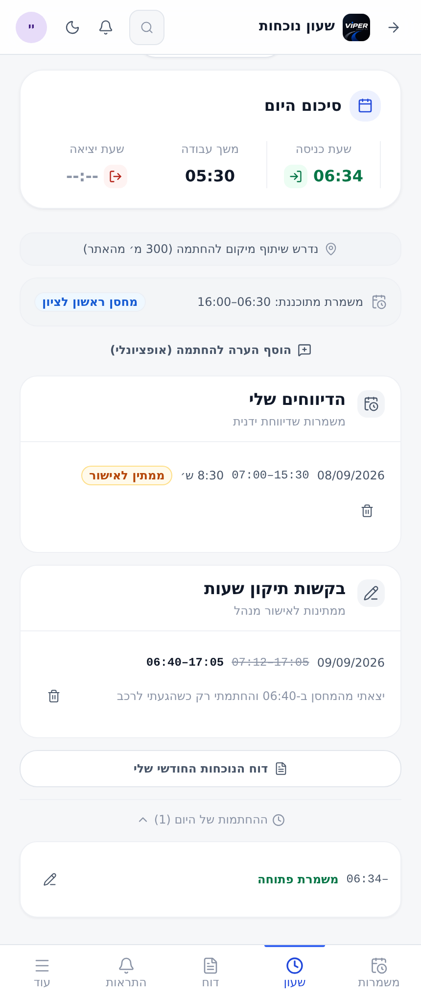
החלק התחתון של המסך
מה מחכה למטה
הדיווחים שלי — משמרות שדיווחתם ידנית והסטטוס שלהן. דיווח שממתין לאישור אפשר לבטל בלחיצה על פח האשפה.
בקשות תיקון שעות — מה שנשלח וטרם הוכרע. השעה הרשומה מופיעה במחיקה, והמבוקשת לידה.
דוח הנוכחות החודשי שלי — קישור ישיר לדוח.
ההחתמות של היום — נפתח בלחיצה. משמרת שלא נסגרה מסומנת "משמרת פתוחה", ולצד כל החתמה יש עיפרון לבקשת תיקון.
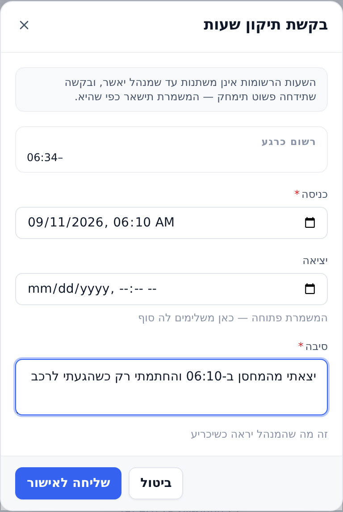
בקשת תיקון שעות
כשהשעה שנרשמה אינה נכונה
הכפתור יושב ליד כל החתמה ברשימת ״ההחתמות של היום״, וגם על כל שורה
בדוח החודשי.
השעות אינן משתנות עד שמנהל מאשר. בקשה שנדחית פשוט נמחקת, והמשמרת נשארת כפי שהיא.
סיבה היא שדה חובה — זה מה שהמנהל רואה כשהוא מכריע.
שדה יציאה ריק משאיר את שעת היציאה כפי שהיא. במשמרת פתוחה, זה המקום להשלים לה סוף.
על משמרת שיש עליה בקשה פתוחה מופיע התג בקשת תיקון נשלחה במקום הכפתור.
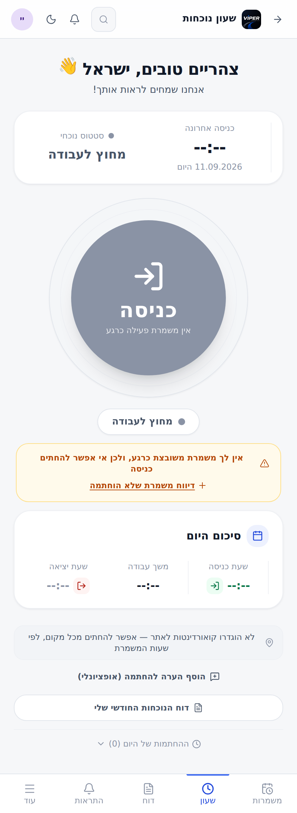
הכניסה חסומה, והמסך אומר למה
כשהכפתור אפור
הכניסה נפתחת רק כשיש משמרת עכשיו: מתחילת המשמרת פחות ״חסד״
שנקבע בכרטיס שלכם, ועד סיומה ועוד אותו חסד. ההודעה מגיעה מהשרת, ולכן
היא בדיוק זו שהייתם מקבלים אם הייתם לוחצים.
ארבע הסיבות האפשריות
אין משמרת משובצת
אין לכם שיבוץ בחלון הזמן הנוכחי
מוקדם מדי
המשמרת עוד לא נפתחה — יש להמתין
המשמרת הסתיימה
חלון הזמן נסגר
השעון כבוי
ההחתמה בשעון כובתה עבורכם בכרטיס העובד
בכל אחד מהמקרים האלה הדרך היא דיווח משמרת שלא הוחתמה.
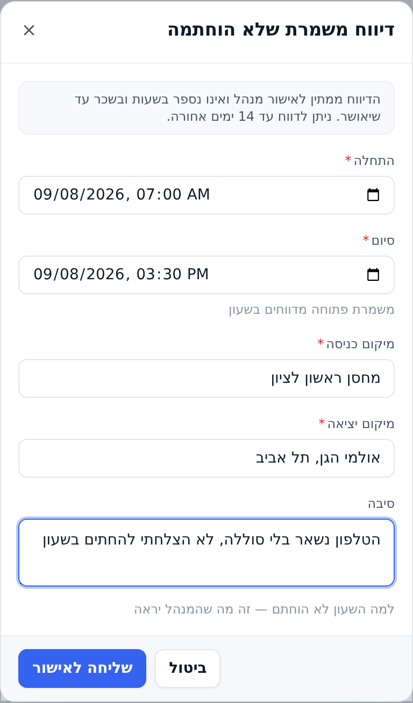
דיווח משמרת שלא הוחתמה
לדווח על עבודה שהשעון לא תפס
התחלה וסיום הן שדות חובה. משמרת שעדיין פתוחה מדווחים בשעון, לא כאן.
מיקום כניסה ומיקום יציאה — חובה, במילים. לדיווח ידני אין GPS לאמת מולו, ולכן המלל הוא מה שהמנהל מאשר לפיו.
סיבה — למה השעון לא הוחתם.
חלון הזמן לאחור כתוב בראש הטופס עצמו.
שווה לזכור
הדיווח נשמר בסטטוס ״ממתין לאישור״ ואינו נספר בשעות ובשכר עד שמנהל
יאשר אותו. עד אז הוא מופיע ברשימה עם תג כתום.
ואם אין קליטה?
החתמה בלי רשת פשוט לא נכנסת. אין תור שמשלים אותה אחר כך — השרת
חותם את השעה שבה הבקשה הגיעה אליו, ושליחה מאוחרת הייתה רושמת שעה שגויה.
המסך יאמר ״אין חיבור לרשת — ההחתמה לא נקלטה״.
מה שכן אפשר: לנסות שוב כשהקליטה חוזרת, או לדווח את המשמרת ידנית. המסכים
עצמם ממשיכים להיטען מהעותק השמור במכשיר, כך שאת המשמרת אפשר לראות גם בשטח
בלי רשת.
הודעות מיקום, ומה לעשות איתן
מה שכתוב
מה לעשות
שיתוף המיקום נחסם
לאשר גישה למיקום בהגדרות הדפדפן, ולנסות שוב
לא הצלחנו לאתר את המיקום שלך
לבדוק שה־GPS פעיל; אם אתם בתוך מבנה, לצאת לרגע לחוץ
הדפדפן הזה אינו תומך באיתור מיקום
להשתמש בדפדפן או במכשיר אחר
2
הלו״ז — מסך המשמרות
המסך כולו לוח אחד: שבוע, כל 24 השעות, בלי גלילה. מעבר בין שבועות נעשה
בהחלקה שמאלה או ימינה, והקו האדום הוא השעה הנוכחית.
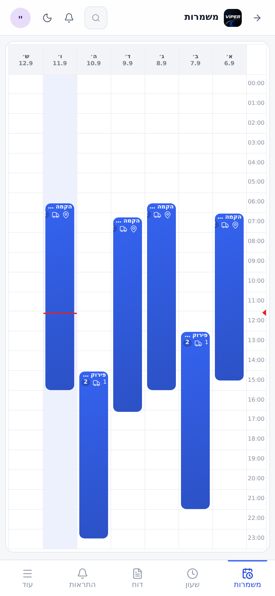
הלו״ז השבועי
מה כתוב על משמרת
שם המשמרת — סוג העבודה והאירוע, למשל ״הקמה — אולמי הגן״.
טווח השעות של המשמרת כולה.
סמן מיקום — המשמרת מתחילה במחסן ולא בשטח.
סמן משאית — המשמרת כוללת נסיעה חזרה למחסן, והשעה המוצגת היא שעת ההגעה למחסן ולא שעת סיום העבודה.
מספר בעיגול — כמה משימות במשמרת. לחיצה פותחת את הפירוט.
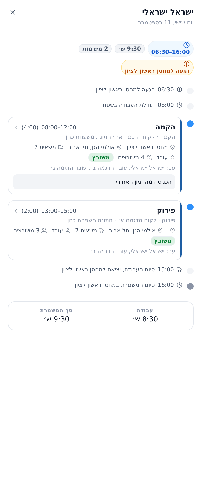
פירוט משמרת, כציר זמן
מה יש במגירה
הגעה למחסן — השעה ושם המחסן, כשהמשמרת מתחילה שם.
תחילת העבודה בשטח.
כרטיס לכל משימה — סוג המשימה, טווח השעות ואורכה, הלקוח והלקוח הסופי, כתובת האתר, המשאית, התפקיד שלכם, כמה משובצים, מי עוד בצוות, והערות המשימה.
סיום העבודה והיציאה חזרה למחסן.
סיום המשמרת.
בתחתית שני מספרים: עבודה — השעות שבהן עבדתם בפועל,
וסך המשמרת — כולל הנסיעה חזרה.
מאיפה המשמרת מתחילה, ואיפה היא נגמרת
המשמרת אינה נקבעת ידנית — היא נגזרת מהמשימות ששובצתם אליהן, ולכן היא
זזה מעצמה כששעות המשימה משתנות.
ההתחלה תלויה במה שסומן עבורכם באותה משימה: מי שיוצא מהמחסן מתחיל בשעת המחסן, מי שמגיע לשטח — בשעת השטח.
הסיום נקבע לפי המשימה האחרונה. נגמרה בשטח — השעה היא שעת השטח. נגמרה במחסן — נוספת אליה הנסיעה חזרה.
מקרה שמבלבל
שעת מחסן שגדולה משעת השטח היא של הערב שלפני. משימה של 11.9
שמתחילה ב־01:00 עם מחסן ב־23:00 יוצאת ב־23:00 של 10.9, והמשמרת
נתלית על היום שבו היא התחילה. הלו״ז מסמן ״1-״ על השעה.
3
דוח הנוכחות שלי
חודש שלם במסך אחד: כמה ימים, כמה שעות, כמה מהן נוספות, ומה הסכום.
החצים ליד שם החודש מדפדפים אחורה וקדימה.
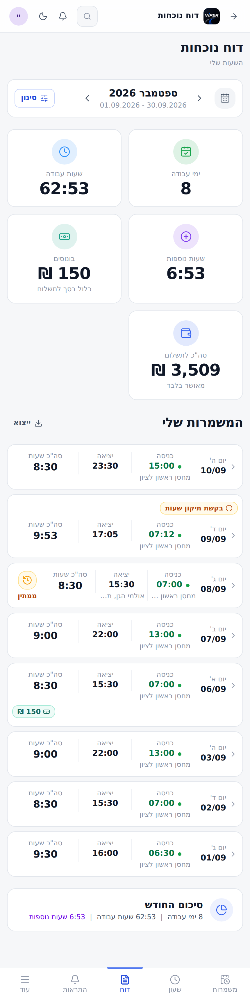
הדוח החודשי, מלמעלה למטה
האריחים שבראש המסך
ימי עבודה
כמה משמרות מאושרות נספרו בחודש
שעות עבודה
סך השעות שעבדתם בפועל
שעות נוספות
כמה מהשעות האלה נספרו כשעות נוספות
בונוסים
סך הבונוסים. כלול בסך לתשלום ואינו נוסף עליו
סה״כ לתשלום
הסכום — מאושר בלבד
״מאושר בלבד״
משמרת שממתינה לאישור אינה נספרת באריחים ולא בסכום. היא מופיעה
ברשימה עם תג ״ממתין״, ונכנסת לסיכום ברגע שתאושר.
בתחתית הרשימה יש שורת סיכום החודש — אותם מספרים שבאריחים,
במשפט אחד, בלי לגלול חזרה למעלה.
התגים שעל כרטיס משמרת
כל שורה בדוח היא משמרת אחת: התאריך ויום השבוע, שעת כניסה ושעת יציאה,
ומקום ההחתמה מתחת לשעה. נקודה ירוקה ליד שעת הכניסה אומרת שהמיקום אומת.
ממתיןדיווח שטרם אושר, ואינו נספר בשעות ובשכר
נדחההדיווח נדחה; נימוק המנהל מופיע לידו
ידניהמשמרת דווחה ולא הוחתמה בשעון
בקשת תיקון שעותיש בקשה פתוחה על המשמרת הזו
150 ₪בונוס שנקבע למשמרת
תוקןמנהל שינה את השעות
ללא משמרת משובצתההחתמה נכנסה בלי שיבוץ מולו למדוד אותה
ללא השלמהההשלמה לשעות בוטלה על המשמרת הזו
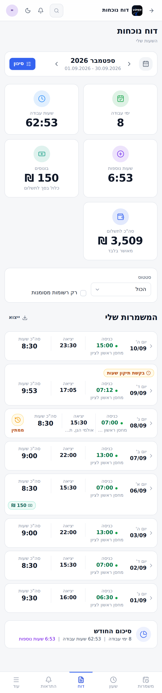
פאנל הסינון
סינון וייצוא
סטטוס — הכול, ממתין לאישור, מאושר או נדחה.
רק רשומות מסומנות — משמרות שהשעון תלה עליהן דגל: מיקום שלא אומת, סגירה אוטומטית, החתמה בלי שיבוץ.
ייצוא מוריד קובץ Excel של בדיוק מה שמוצג במסך, כולל הסינון שהופעל.
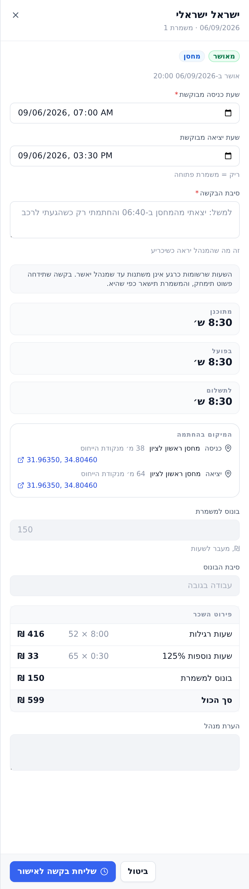
משמרת אחת, עד פירוט השכר
לפתוח משמרת מתוך הדוח
לחיצה על שורה פותחת את כל הפרטים — וגם דרך שנייה לבקש תיקון שעות.
סטטוס ומתי אושרה, ותג נקודת ההתחלה (מחסן או שטח).
שעת כניסה ויציאה מבוקשת — כאן מגישים בקשת תיקון. גם כאן הסיבה היא שדה חובה, והשעות אינן משתנות עד אישור.